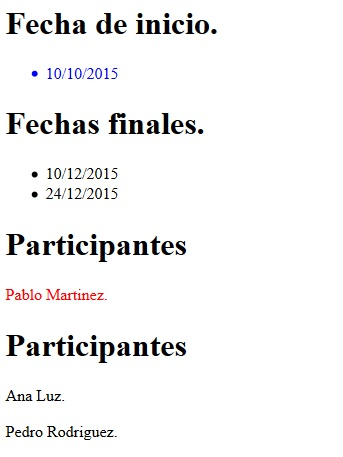

La pseudo-clase only-child se aplica cuando en dicho nivel hay un solo elemento. Por ejemplo:
<ul id="fechainicio">
<li>10/10/2015</li>
</ul>
Luego si especificamos la siguiente regla:
#fechainicio li:only-child {
color:blue;
}
El li se pinta de rojo ya que hay un solo elemento en ese nivel.
Si tenemos por ejemplo:
<div id="equipo1">
<h1>Participantes</h1>
<p>Pablo Martinez.</p>
</div>
Y aplicamos el estilo:
#equipo1 p:only-child {
color:red;
}
No se selecciona el párrafo ya que no es el único elemento en dicho nivel (hay un h1 y un párrafo)
Ahora la pseudo-clase only-of-type se aplica cuando en dicho nivel hay un solo elemento de ese tipo (no importa cuantos otros elementos hay de otro tipo en el mismo nivel)
Si tenemos ahora:
<div id="equipo1">
<h1>Participantes</h1>
<p>Pablo Martinez.</p>
</div>
con la regla:
#equipo1 p:only-of-type{
color:red;
}
Si se pinta de rojo el párrafo ya que en ese nivel hay solo un elemento de tipo párrafo.
Veamos una página y una hoja de estilo que prueban estas dos pseudo-clases:
<!DOCTYPE html>
<html>
<head>
<title>Problema</title>
<link rel="StyleSheet" href="estilos.css" type="text/css">
</head>
<body>
<h1>Fecha de inicio.</h1>
<ul id="fechainicio">
<li>10/10/2015</li>
</ul>
<h1>Fechas finales.</h1>
<ul id="fechafin">
<li>10/12/2015</li>
<li>24/12/2015</li>
</ul>
<div id="equipo1">
<h1>Participantes</h1>
<p>Pablo Martinez.</p>
</div>
<div id="equipo2">
<h1>Participantes</h1>
<p>Ana Luz.</p>
<p>Pedro Rodriguez.</p>
</div>
</body>
</html>
estilos.css
#fechainicio li:only-child {
color:blue;
}
#fechafin li:only-child {
color:blue;
}
#equipo1 p:only-of-type {
color:red;
}
#equipo2 p:only-of-type {
color:red;
}
Como resultado tenemos en el navegador:
